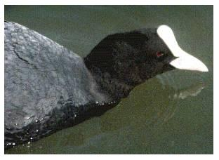

Coot
A common resident & breeding bird to the reservoir. Large flocks have been recorded in winters gone by but numbers have been decreasing in recent years.

21/03/35 - "Numerous". Bred this year
1937 - "The breeding population at the reservoir is about 18 - 20 pairs annually"
12/02/56 - Maximum count of 206 birds. (DEP)
24/11/57 - Maximum count of 170 birds
26/10/58 - Maximum count of 315 birds. Record count to date. (DEP)
18/01/59 - Maximum count of 250 birds
17/01/60 - Maximum count of 200 birds
27/12/61 - Maximum count of 210 birds
27/12/62 - Maximum count of 175 birds
22/12/63 - Maximum count of 94 birds. None bred this year
??/01/64 - Maximum count of 94 birds
??/12/64 - 54 birds. Several pairs bred this year
21/01/65 - Maximum count of 89 birds
16/12/65 - 71 birds. One pair bred this year
17/12/67 - Maximum count of 86 birds. 5 or 6 pairs bred this year
22/12/68 - Maximum count of 101 birds
1969 - 3 pairs bred this year
08/01/70 - Maximum count of 93 birds. 2 or 3 pairs bred this year
1971 - Maximum count of only 27 birds
17/12/72 - Maximum count of 40 birds
16/12/73 - Maximum count of 173 birds. Bred this year
13/01/74 - Maximum count of 125 birds. Little breeding success this year
1975 - Bred
17/12/77 - Maximum count of 80 birds. Bred
11/02/78 - Maximum count of 100 birds. 3 pairs bred this year
10/02/79 - Maximum count of 120 birds
31/12/79 - 90 birds. 3 or 4 pairs bred this year
01/01/80 - Maximum count of 80 birds, falling to 15 by March & up to 20 during 2nd winter period. Approx. 10 young reared this year
28/12/81 - Maximum count of 120 birds
16/01/82 - Maximum count of 150 birds
1983 - No count
1984 - Maximum count of 50 birds during February/March
No counts in 1985, 86 or 87
13/07/88 - Adult & 12 juveniles noted. No winter counts recorded this year
1989 - Family with 6 juveniles noted. No winter counts recorded this year
22/12/90 - 30 birds
22/12/91 - Maximum count of 54 birds
10/01/92 - Maximum count of 65 birds
29/12/92 - 44 birds
16/01/93 - Maximum count of 49 birds
14/12/93 - 28 birds
07/01/94 - Maximum count of 36 birds
09/12/94 - 22 birds
18/01/95 - 28 birds
28/01/96 - Maximum count of 31 birds
21/02/96 - 28 birds
26/12/96 - 18 birds
01/01/97 - Maximum count of 30 birds
02/02/97 - Approx. 20 birds
08/11/97 - 11 birds
04/01/98 - Maximum count of 19 birds. 2 pairs bred this year, 4 juveniles seen
??/10/98 - 12 birds
11/12/98 - 15 birds
12/01/99 - 19 birds
??/03/99 - 15 birds. 2 pairs bred this year, 8 juveniles seen
??/10/99 - 10+ birds
??/11/99 - 19 birds
??/12/99 - Maximum count of 20 birds
13/01/00 - 26 birds
24/12/00 - 14 birds
24/01/01 - 14 birds
21/07/01 - 11 birds
21/10/01 - 14 birds
17/03/02 - 15 birds
28/05/02 - 6 chicks
16/12/02 - 16 birds
03/01/03 - 11 birds
02/02/04 - 10 birds
02/07/04 - 10 adults and 5 young
01/11/05 - 7 birds
02/06/06 - Pair with 6 young
25/12/06 - 14 birds
12/01/07 - 17 birds
22/06/07 - 4 young seen
02/11/08 - 14 birds
29/10/09 - max 20 birds and 20 again on 22/12/09
2010 - Good numbers (for recent years) with very cold weather in December. 29 birds on several dates and max 33 on 05/12
2011 - 22 on 09/01/11, up to 19 in November
2012 - max 23 on 05/02, first 2 chicks on 26/04. At least one nest was washed out in April. 7 chicks were seen in one brood on 29/07 and were still all present on 22/08
2013 - up to 10 chicks seen in July. Max 14 birds 21/10
2014 - Bred. Max 22 birds 12/01
2015 - Bred with at least 4 broods. Max 34 on 01/09
2016 - Bred, first chicks seen 02/05. Max 29 on 25/01
2017 - Bred, chicks seen at both north and south ends
2018 - Bred this year
2019 - Bred this year
2020 - At least 2 pairs bred. Max 12 birds on 11/12
2021 - Max 12 birds on 03/02
2022 - Max 14 birds on 23/08. Also 12 on 21/11. At least 2 nests
2023 - Max of 11 birds on 04/02. Also 10 on 01/03
2024 - Up to 6 birds present through the year
2025 - Up to 5 birds present through the year with max of 7 on 21/12